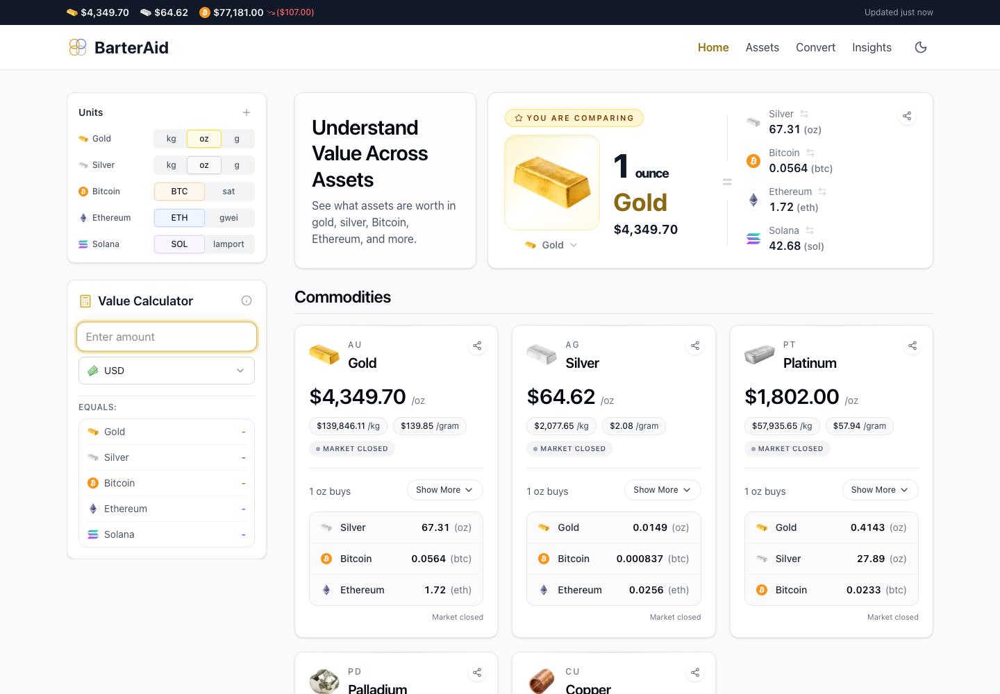
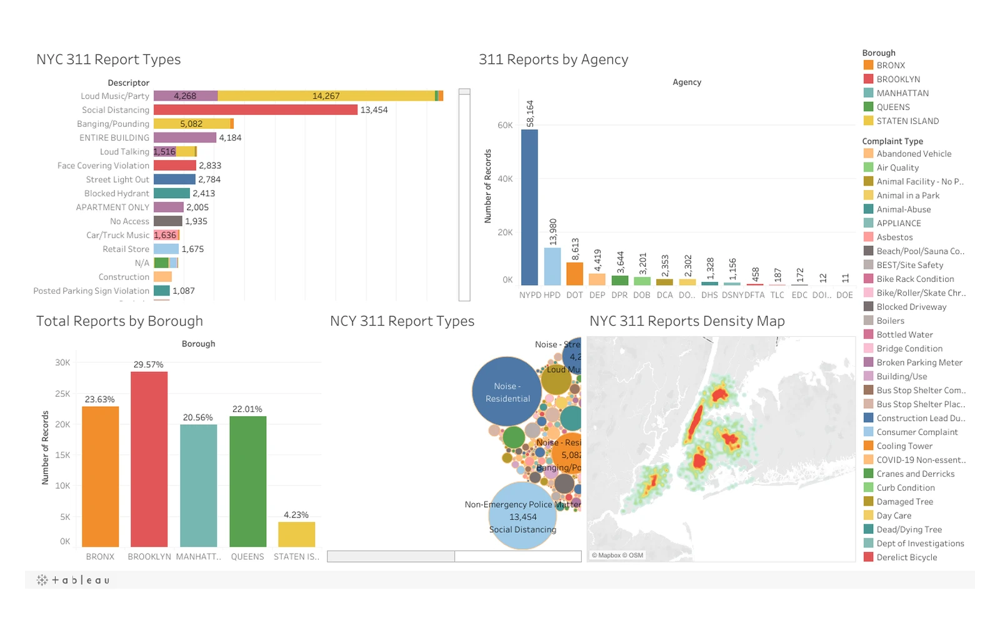

Full-Stack
Software Engineer
Building reliable, performant web applications and data-driven products.
Software engineeringData & BIOperations management
Projects

Featured independent product
BarterAid
Understand value beyond dollars.
BarterAid is a full-stack value discovery platform I independently conceived, designed, and built. It transforms live market data into cross-asset comparisons, purchasing-power insights, conversions, rankings, portfolio tools, and other ways to understand what assets are actually worth relative to one another.
Next.jsReactTypeScriptRedisPostgreSQL

Operations intelligence
Interactive Retail Dashboard
Inventory planning, forecasting, and performance analysis built into an advanced Excel operating tool.

Open-source engineering
Docketeer
A visual management and monitoring experience for Docker containers and Kubernetes clusters.

Responsive web design
Comfy Cafe
A warm, responsive website for a local cafe with an interactive menu, polished motion, and accessible navigation.

Data visualization
Tableau Dashboard
An interactive analysis of New York City 311 data across all five boroughs, designed to make patterns easy to explore.
View Dashboard ↗
View other projects →
Skills
Software Development
Full-stack applications built for reliability, clarity, and everyday use.
- Frontend
- React · Next.js · TypeScript
- Backend
- Node.js · REST APIs · Prisma
- Data layer
- PostgreSQL · MongoDB · Redis
- Quality
- Testing · Accessibility · Performance
Data & Business Intelligence
Complex information translated into decisions people can act on.
- Analytics
- SQL · Excel · Google Sheets
- Modeling
- Power BI · DAX · Data models
- Visualization
- Tableau · Dashboards
- Planning
- Analysis · Forecasting
Business & Operations
Practical experience improving the systems behind real-world operations.
- Planning
- Demand · Inventory · Assortment
- Commercial
- Procurement · Cost negotiation
- Improvement
- Process · Workflow · Systems
- Leadership
- Vendors · Cross-functional teams
Education & credentials
BBA
Bachelor of Business Administration, Computer Information Systems
Baruch College, CUNY · Graduated Cum Laude
CS
Software Engineering Immersive
Codesmith · Full-stack development, system design, data structures, and algorithms
BI
Business Intelligence & Data Credentials
Power BI, Python, Pandas, data modeling, and dashboard design